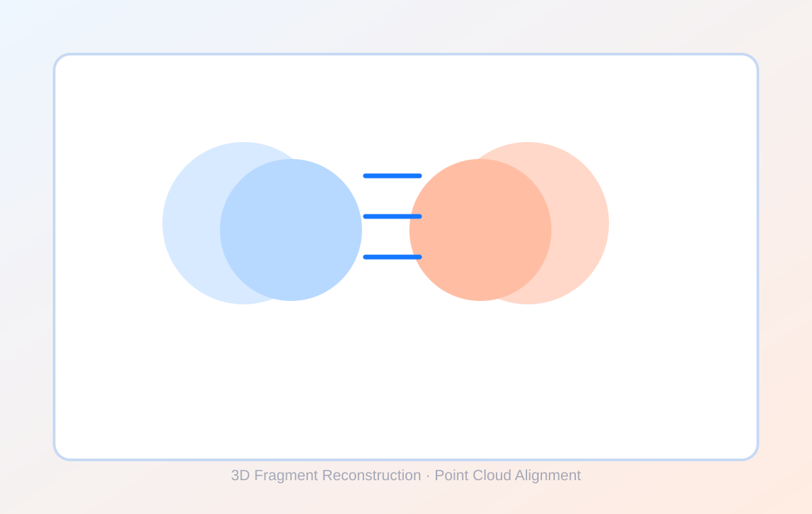
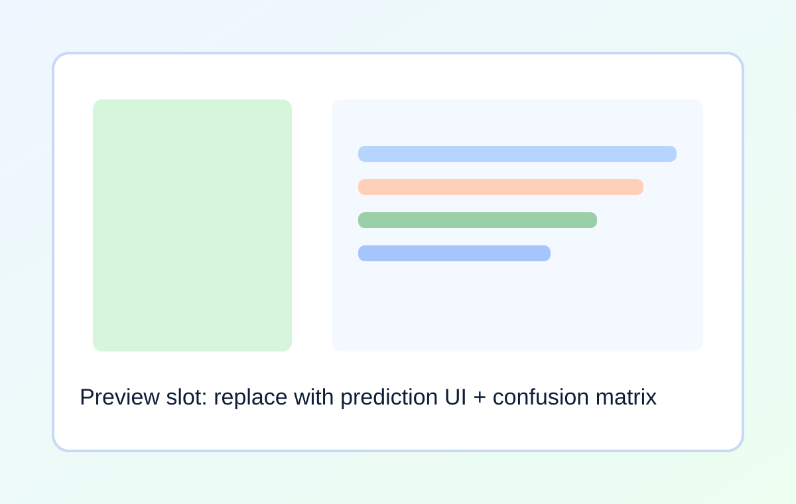
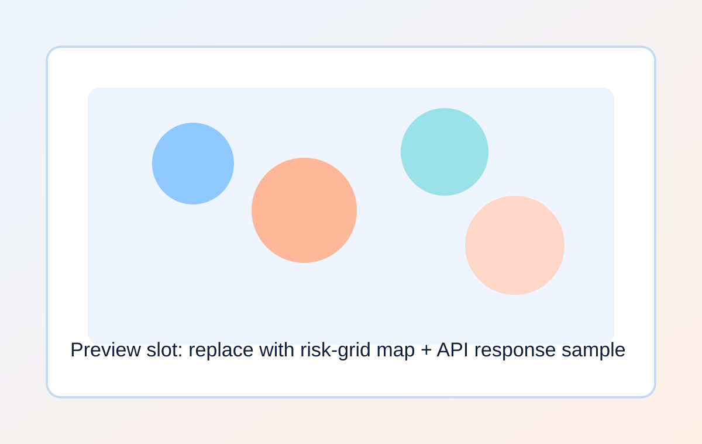
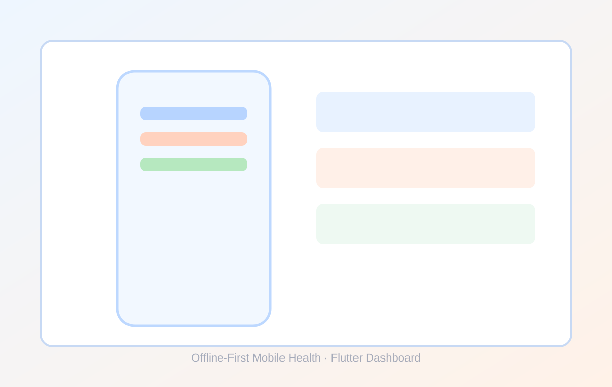

4
Systems Built
Software Engineering Portfolio
Computer Vision, Geospatial Platforms, and Mobile Applications
Software engineer building data-driven systems combining machine learning, spatial analytics, and scalable backend services.
4
Systems Built
~97%
Best Model Accuracy (TerraHerb)
1.5K+
Labeled Samples (AutoEIT-STS)
Engineering Focus
Designing end-to-end systems where ML models are integrated into reliable engineering workflows.
Building service layers, data pipelines, and deterministic APIs for production use-cases.
Developing geospatial analytics and offline-first mobile applications with clear system boundaries.
Featured Projects
Primary Highlight
3D Reconstruction System for Fragmented Artifacts

Problem
Reconstruct artifacts from partial 3D fragment scans.
Approach
Geometric feature extraction pipeline with embedding-based fragment matching and alignment.
Pipeline
Point Clouds -> Features -> Embeddings -> RANSAC + ICP -> Global Graph
Technical Output
Primary Highlight
Plant Disease Detection Platform

Problem
Classify plant species and diseases from leaf images.
Approach
Image ingestion and augmentation pipeline with CNN inference service and API delivery.
Pipeline
Image -> Augmentation -> CNN -> Classification -> API Response
Technical Output
Real-Time Urban Risk Intelligence Platform

Spatial event-sourcing system for real-time geospatial risk computation.
Offline-First Mobile Health Analytics System

Privacy-preserving mobile app with modular analytics and local persistence.
System Design Snapshots
Benchmark Results
| Project | Dataset / Scale | Quality Metric | Latency | Status |
|---|---|---|---|---|
| TerraHerb | PlantVillage | Accuracy ~97% | TBD | Published |
| HealingStone | Fragment point-cloud corpus | Alignment metric: TBD | TBD | Collecting |
| UDIE | Urban event stream | Risk model quality: TBD | TBD | Collecting |
| LifeTrack | Local health records | Offline sync integrity: TBD | TBD | Collecting |
Use real measured values for latency, precision, recall, and throughput before interview rounds.
Experiments
Compare FPFH descriptors against learned embeddings for fragment matching stability.
Evaluate EfficientNet vs MobileNet trade-offs for TerraHerb accuracy and inference cost.
Assess deterministic spatial risk field sensitivity under event burst and sparse-signal conditions.
Open Source Engineering
3D reconstruction pipeline emphasizing geometric matching and learned embeddings.


Geospatial event intelligence engine with backend compute and mobile integration.


CNN disease classification pipeline with dataset-driven evaluation.


Technical Skills
Python, C++, Dart
REST APIs, FastAPI, PostgreSQL, PostGIS, Linux, Docker
PyTorch, TensorFlow, NumPy, CUDA, OpenCV, TorchVision, Open3D
Flutter, Mobile Systems, Geospatial Analytics, Git
Resume